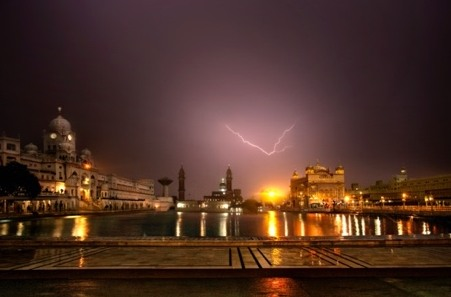

Presents
EmpathyofLight
Illuminating
sight into insight.
A retrospective of
fine art photography by
Sudhir
Ramchandran
Maini Sadan, 38, Lavelle Road,
7th Cross, Bangalore – 560 001,
Karnataka, India.
View the Catalogue →
All 60 works, with current pricing.
